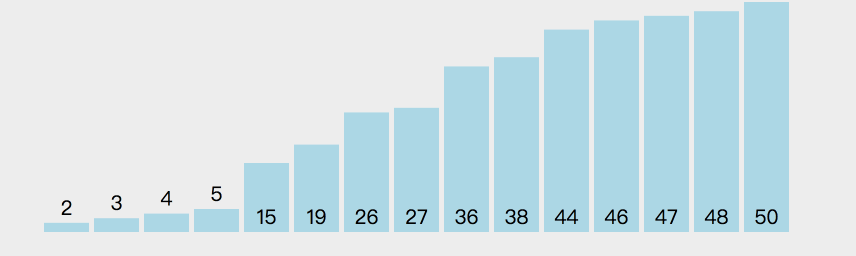
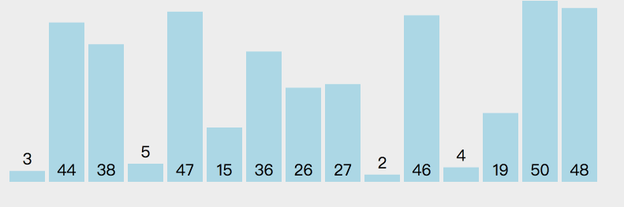
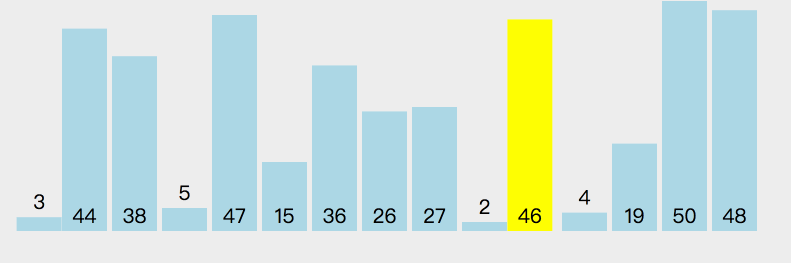
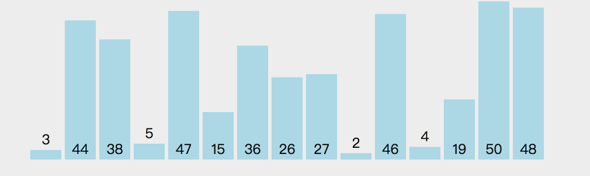
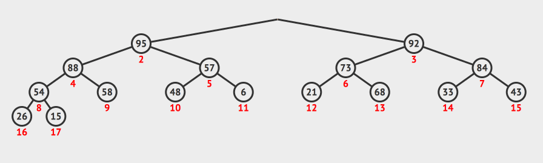
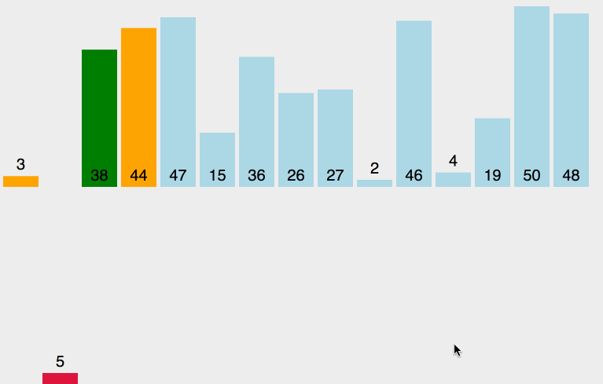
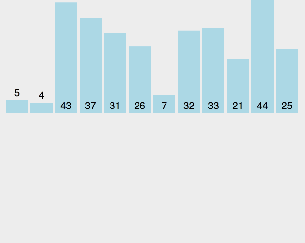
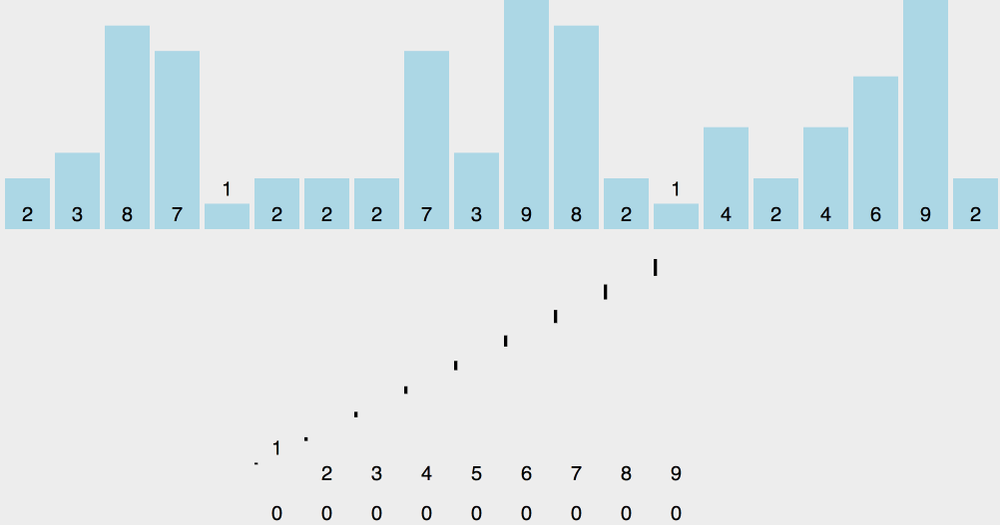
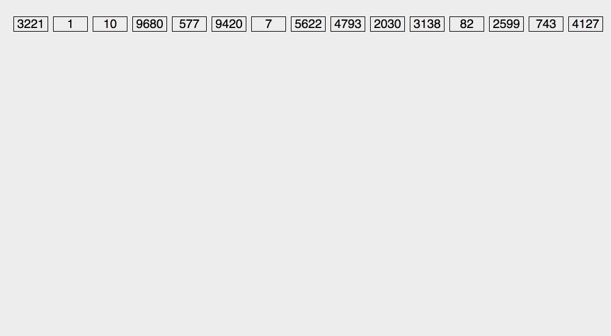

内部排序算法¶
python：3.6.2
前言¶
排序算法是计算机中最基础的算法，很多高级算法都依赖于此；
排序算法的稳定性
如果待排序的数列中，相同的元素在排序前后相对顺序不变，即为稳定；
例如待排序列$[1,2_{a},5,3,2_{b}]$，如果排序之后，$2_{a}$依然在$2_{b}$的前面，就表示稳定；
算法的判断条件很重要，更改了条件，稳定的排序也会变得不稳定，如将冒泡的比较变成$\ge$。
一图胜千言，在下面搜集了一些简单的示例图，使用gif录屏器制作(算法可视化参见见参考文献)。
1、排序算法的分类¶
排序算法的理论：
根据排序的方法：插入、交换、选择、合并等, 将排序进行划分：
| 排序方法 | 排序算法 |
|---|---|
| 交换排序 | 冒泡排序 鸡尾酒排序 奇偶排序 梳排序 侏儒排序 快速排序 臭皮匠排序 Bogo排序 |
| 选择排序 | 选择排序 堆排序 平滑排序 笛卡尔树排序 锦标赛排序 圈排序 |
| 插入排序 | 插入排序 希尔排序 伸展排序 二叉查找树排序 图书馆排序 耐心排序 |
| 归并排序 | 归并排序 梯级归并排序 振荡归并排序 多相归并排序 列表排序 |
| 分布排序 | 美国旗帜排序 珠排序 桶排序 爆炸排序 计数排序 鸽巢排序 相邻图排序 基数排序 闪电排序 插值排序 |
| 并发排序 | 双调排序器 Batcher归并网络 两两排序网络 |
| 混合排序 | 块排序 Tim排序 内省排序 Spread排序 J排序 |
| 其他 | 拓扑排序 煎饼排序 意粉排序 |
下面是常用的算法列表：
冒泡排序
直接冒泡排序
鸡尾酒排序
梳排序
选择排序
插入排序
直接插入排序
二分插入排序
希尔排序
归并排序
堆排序
快速排序
计数排序
基数排序
桶排序
| 算法 | 最坏时间复杂度 | 最佳时间复杂度 | 平均时间复杂度 | 空间复杂度 | 稳定性 |
|---|---|---|---|---|---|
| 冒泡排序 | $O(n^{2})$ | $O(n)$ | $O(n^{2})$ | $O(1)$ | 稳定 |
| 选择排序 | $O(n^{2})$ | $O(n^{2})$ | $O(n^{2})$ | O(1) | 不稳定 |
| 插入排序 | $O(n^{2})$ | $O(n)$ | $O(n^{2})$ | $O(1)$ | 稳定 |
| 希尔排序 | $O(nlog(n)) \sim O(n^{2})$ | $O(n^{1.5})$ | $O(n^{2})$ | $O(1)$ | 不稳定 |
| 堆排序 | $O(nlog(n))$ | $O(nlog(n))$ | $O(nlog(n))$ | $O(1)$ | 不稳定 |
| 归并排序 | $O(nlog(n))$ | $O(nlog(n))$ | $O(nlog(n))$ | $O(n)$ | 稳定 |
| 快速排序 | $O(n^{2})$ | $O(nlog(n))$ | $O(nlog(n))$ | $O(logn)\sim O(n)$ | 不稳定 |
| 计数排序 | $O(n+m)$ | $O(n+m)$ | $O(n+m)$ | $O(n + m)$ | 稳定 |
| 基数排序 | $O(k*n)$ | $O(k*n)$ | $O(k*n)$ | $O(k*n)$ | 稳定 |
| 桶排序 | $O(n)$ | $O(n)$ | $O(n)$ | $O(m)$ | 不稳定 |
2、交换排序¶
2.1 冒泡排序¶
Bubble Sort
2.1.1 直接冒泡排序¶
bubble
冒泡排序如上图所示，给定一个待排序列，从前往后依次扫描，将最大的元素放到最后面正确的位置，已经放到正确位置的序列在下一次扫描中就不会继续比对。
待排序列：[4,3,1,2]
[3,1,2,==4==]
[1,2,==3,4==]
[1,==2,3,4==]
[==1,2,3,4==]
如上面的简单序列所示，黄色的表示已经排好的序列
实际上，我们可以看到，最后一次排序并没有进行元素交换，所以，我们可以设置一个标志位，当本次比对没有进行数据交换的时候，就表明已经有序，跳出程序。
def bubble_sort(l_A):
n = len(l_A)
for i in range(0,n):
for j in range(0,n-i-1):
if l_A[j] > l_A[j + 1]:
l_A[j + 1] , l_A[j] = l_A[j] , l_A[j + 1]
return l_A
def bubble_sort_enhance(l_A):
n = len(l_A)
swap_flag = 0
for i in range(0,n):
swap_flag = 0
for j in range(0,n-i-1):
if l_A[j] > l_A[j + 1]:
swap_flag = 1
l_A[j + 1] , l_A[j] = l_A[j] , l_A[j + 1]
if swap_flag == 0:
break
return l_A
if __name__ == '__main__':
A = [6,5,4,3,2,1]
A_str = ",".join([str(i) for i in A])
sorted_A = bubble_sort_enhance(A)
sorted_A_str = ",".join([str(i) for i in sorted_A])
print("待排序列：",A_str)
print("已排序列：",sorted_A_str)
2.1.2 鸡尾酒排序¶
在调制鸡尾酒的过程中，需要来回摇晃，鸡尾酒算法也叫搅拌排序，涟漪排序
鸡尾酒排序是冒泡排序的简单改进，直接冒泡排序是单向的，而鸡尾酒算法则是进行双向排序；
待排序列：[4,3,2,1]
[3,2,1,==4==]
[==1==,3,2,==4==]
[==1==,2,==3,4==]
[==1,2,3,4==]
如上图所示，首先进行一次最大数冒泡，将最大数放到最后面，然后进行一次最小数冒泡，将最小数放到左面；
鸡尾酒排序在完全无序的情况下，与直接冒泡排序并无差别，同样的，我们也设置一个交换标志位，在没有交换的情况下，直接跳出。
def cocktail_sort(l_A , n):
left = 0
right = n - 1
swap_flag = 1
while left < right:
if swap_flag:
for i in range(left,right):
swap_flag = 0
if l_A[i] > l_A[i + 1]:
swap_flag = 1
l_A[i] , l_A[i + 1] = l_A[i + 1] , l_A[i]
right = right - 1
for i in range(right,left,-1):
if l_A[i] < l_A[i - 1]:
swap_flag = 1
l_A[i] , l_A[i - 1] = l_A[i - 1] , l_A[i]
left = left + 1
else:
break
return l_A
if __name__ == '__main__':
A = [6,5,4,3,2,1]
A_str = ",".join([str(i) for i in A])
sorted_A = cocktail_sort(A,len(A))
sorted_A_str = ",".join([str(i) for i in sorted_A])
print("待排序列：",A_str)
print("已排序列：",sorted_A_str)
2.1.3 梳排序¶
Comb Sort
梳排序也是一种冒泡排序的改进方法，与希尔排序的思想类似，采用不同的增量序列，将待排序列划分成多个子序列，然后将每个子序列使用冒泡排序，最后一次的间隔一定是1，保证最终排序。
生成子序列的间隔一般是取待排序列长度递归除以==1.3==得到，例如长度为6的序列，其递减增量序列为：
6/1.3 = 4.62 => 4
4/1.3 = 3.07 => 3
3/1.3 = 2.31 => 2
2/1.3 = 1.54 => 1
最终序列为：[4,3,2,1]
待排序列：[6,5,4,3,2,1]
[2,1,4,3,6,5] ==使用间隔4==
[2,1,4,3,6,5] ==使用间隔3==
[2,1,4,3,6,5] ==使用间隔2==
[1,2,3,4,5,6] ==使用间隔1==
如上所示，使用不同的间隔的情况
def comb_sort(l_A):
size = len(l_A)
gap = int(size/1.3)
while gap >= 1 :
for i in range(0,size - gap):
if l_A[i] > l_A[i + gap]:
l_A[i] , l_A[i + gap] = l_A[i + gap] , l_A[i]
gap = int(gap/1.3)
return l_A
if __name__ == '__main__':
A = [6,5,4,3,2,1]
A_str = ",".join([str(i) for i in A])
sorted_A = comb_sort(A)
sorted_A_str = ",".join([str(i) for i in sorted_A])
print("待排序列：",A_str)
print("已排序列：",sorted_A_str)
2.2 快速排序¶
Quick Sort
2.2.1 快速排序¶
fast
快速排序算法分治策略(Divide and Conquer)，将一个序列分成两个序列，然后选取基准，使用基准，将小于等于基准的放到左面，大于等于基准的数，放到右面；
我们来看这样的处理顺序：
判断待处理的数组中有多少元素，如果只有一个，返回
选取基准，利用基准将数组分成两部分，进行划分，小于等于基准的在左面，大于基准的在右面
将基准左面的数组重新执行第一步
将基准右面的数组重新执行第一步
待排序列：[6,5,4,3,2,1]
==下标 5 基准 1==
[1, 5, 4, 3, 2, 6]
==下标 5 基准 6==
[1, 5, 4, 3, 2, 6]
==下标 4 基准 2==
[1, 2, 4, 3, 5, 6]
==下标 4 基准 5==
[1, 2, 4, 3, 5, 6]
==下标 3 基准 3==
[1, 2, 3, 4, 5, 6]
如上所示，目前基准选择的是最右面的元素，第一次，选择1作为基准，第二次选择6作为基准，一次类推；
def partation(l_A , left , right):
pivot = l_A[right]
pivot_index = left
# print('下标',right,'基准',pivot)
for i in range(left, right):
if l_A[i] <= pivot:
l_A[i] ,l_A[pivot_index] = l_A[pivot_index], l_A[i]
pivot_index += 1
if pivot_index != right:
l_A[pivot_index] , l_A[right] = l_A[right] ,l_A[pivot_index]
# print(l_A)
return pivot_index
def quick_sort(l_A, left , right):
if left >= right:
return
pivot_index = partation(l_A ,left, right)
quick_sort(l_A,left,pivot_index -1)
quick_sort(l_A, pivot_index+1 , right)
if __name__ == '__main__':
A = [6,5,4,3,2,1]
A_str = ",".join([str(i) for i in A])
quick_sort(A,0,len(A)-1)
sorted_A_str = ",".join([str(i) for i in A])
print("待排序列：",A_str)
print("已排序列：",sorted_A_str)
2.2.2 随机快速排序¶
random_quick
随机快速排序与快速排序的主要区别就在于基准的选择上，随机快排是随机的选择基准，然后
待排序列：[6,5,4,3,2,1]
==下标 4 基准 2==
[1, 2, 4, 3, 6, 5]
==下标 5 基准 5==
[1, 2, 4, 3, 5, 6]
==下标 2 基准 4==
[1, 2, 3, 4, 5, 6]
如上所示，
import random
def partation(l_A , left , right):
p = left + int((right - left + 1) * random.random())
l_A[p] ,l_A[right] = l_A[right], l_A[p]
pivot = l_A[right]
# print('下标',p,'基准',pivot)
pivot_index = left
for i in range(left, right):
if l_A[i] <= pivot:
l_A[i] ,l_A[pivot_index] = l_A[pivot_index], l_A[i]
pivot_index += 1
if pivot_index != right:
l_A[pivot_index] , l_A[right] = l_A[right] ,l_A[pivot_index]
# print(l_A)
return pivot_index
def quick_sort(l_A, left , right):
if left >= right:
return
pivot_index = partation(l_A ,left, right)
quick_sort(l_A,left,pivot_index -1)
quick_sort(l_A, pivot_index+1 , right)
if __name__ == '__main__':
A = [6,5,4,3,2,1]
A_str = ",".join([str(i) for i in A])
quick_sort(A,0,len(A)-1)
sorted_A_str = ",".join([str(i) for i in A])
print("待排序列：",A_str)
print("已排序列：",sorted_A_str)
3、选择排序¶
3.1 选择排序¶
Selection Sort
chose
插入排序的基本思路就是从未排序的序列里面选出一个最小的，然后将至放到已排序列的尾部后面元素交换位置，一直到待排序列为0.
待排序列：[5,4,3,2,1]
[==1==,4,3,2,5]
[1,==2==,3,4,5]
[1,2,==3==,4,5]
[1,2,3,==4==,5]
[1,2,3,4,==5==]
如上所示，第一次，扫描全部序列，将最小的1选出来，然后将1与首位的数字5进行交换，然后第二次将最小数字2与数字4进行交换。
def selection_sort(l_A):
n = len(l_A)
for i in range(0,n):
swap_num = i
for j in range(i + 1,n):
if l_A[j] < l_A[i]:
swap_num = j
if swap_num != i:
l_A[i] , l_A[swap_num] = l_A[swap_num], l_A[i]
return l_A
if __name__ == '__main__':
A = [6,5,4,3,2,1]
A_str = ",".join([str(i) for i in A])
sorted_A = selection_sort(A)
sorted_A_str = ",".join([str(i) for i in sorted_A])
print("待排序列：",A_str)
print("已排序列：",sorted_A_str)
3.2 堆排序¶
Heap Sort
heap
堆是完全二叉树，分为最大堆和最小堆，最大堆中，根节点都比其子节点要大，而最小堆中，根节点都比其子节点要小；
最大堆的应用场景，例如带有优先级的排队进程，当系统空闲，优先处理优先级高的；
最大堆主要有这样几个注意点：
建堆
删除根节点
插入一个节点
使用堆排序，主要是利用根节点一直是最大的性质，将根节点与最后面的儿子节点位置对调，堆的大小减一， 然后进行堆调整，然后再将根节点与莫为节点对调，再调整成堆，然后循环递归；
所以，堆排序主要是下面几个步骤：
将数组调整成堆
将根元素与堆的末尾元素对调，调整堆
重复第二步，直到堆的大小为1为止。
待排序列：[6,5,4,3,2,1]
[5,4,3,2,1,==6==]
[4,3,2,1,==5,6==]
[3,2,1,==4,5,6==]
[2,1,==3,4,5,6==]
[==1,2,3,4,5,6==]
这一个较为特殊，默认就是堆的形式，第一步是调整成堆
def heapify(l_A, node , size):
left_child = 2 * node + 1
right_child = 2 * node + 2
max = node
if left_child < size and l_A[max] < l_A[left_child] :
max = left_child
if right_child < size and l_A[max] < l_A[right_child] :
max = right_child
if max != node:
l_A[max] , l_A[node] = l_A[node],l_A[max]
heapify(l_A, max , size)
def build_heap(l_A, size):
heap_size = (size - 1) // 2
while heap_size >= 0 :
heapify(l_A, heap_size , size)
heap_size -= 1
return l_A
def heap_sort(l_A):
size = len(l_A)
temp = build_heap(l_A, size)
while size > 1:
size -= 1
l_A[0],l_A[size] = l_A[size],l_A[0]
heapify(l_A,0, size)
return temp
if __name__ == '__main__':
A = [6,5,4,3,2,1]
A_str = ",".join([str(i) for i in A])
sorted_A = heap_sort(A)
sorted_A_str = ",".join([str(i) for i in sorted_A])
print("待排序列：",A_str)
print("已排序列：",sorted_A_str)
4、插入排序¶
4.1 直接插入排序¶
insert
直接插入排序也是将待排序列分成两部分，其一是左面排好序的，然后是右面待排序，首先将待排序的第一个元素取出来，与排好序的序列机芯从右向左的比对，如果小于，则将此元素向右移动，一直找到当前元素应该放在的位置。
待排序列：[5,4,3,2,1]
[==4,5==,3,2,1]
[==3,4,5==,2,1]
[==2,3,4,5==,1]
[==1,2,3,4,5==]
如上，以高亮表示排好序的元素，然后第一次从待排序中，取出4，然后与5比较，将5向后移位，然后将4放到首位，剩下元素依次进行。
def insertion_sort(l_A):
n = len(l_A)
for i in range(1,n):
get = l_A[i]
j = i - 1
while j >= 0 and l_A[j] > get:
l_A[j+1] = l_A[j]
j = j - 1
l_A[j+1] = get
return l_A
if __name__ == '__main__':
A = [6,5,4,3,2,1]
A_str = ",".join([str(i) for i in A])
sorted_A = insertion_sort(A)
sorted_A_str = ",".join([str(i) for i in sorted_A])
print("待排序列：",A_str)
print("已排序列：",sorted_A_str)
4.2 二分插入排序¶
二分插入排序是直接插入排序的改进版，主要针对于需要比对次数多的场景，例如有一个较小的元素，需要比对多次才能确定要插入的位置，使用二分法，提高查找效率。
待排序列：[6,5,4,3,2,1]
[==5, 6==, 4, 3, 2, 1]
[==4, 5, 6==, 3, 2, 1]
[==3, 4, 5, 6==, 2, 1]
[==2, 3, 4, 5, 6==, 1]
[==1, 2, 3, 4, 5, 6==]
与前面基本相同，唯一不同的就是，在寻找要插入的位置的时候，使用了二分查找法。
def binary_insertion_sort(l_A):
n = len(l_A)
for i in range(1, n):
get = l_A[i]
left = 0
right = i -1
while left <= right:
mid = (left+right)//2
if l_A[i] < l_A[mid]:
right = mid - 1
else:
left = mid + 1
for j in range(i,left,-1):
l_A[j] = l_A[j-1]
l_A[left] = get
return l_A
if __name__ == '__main__':
A = [6,5,4,3,2,1]
A_str = ",".join([str(i) for i in A])
sorted_A = binary_insertion_sort(A)
sorted_A_str = ",".join([str(i) for i in sorted_A])
print("待排序列：",A_str)
print("已排序列：",sorted_A_str)
4.3 希尔排序¶
前面两种插入排序需要移动元素的次数还是太多，是否能够一次将元素移动多个位置，尽可能接近他本来的位置，希尔排序的基本思路就是使用一个递减增量，将待排序列分成多个子序列，进行插入排序，然后最后使用一次增量为1的直接插入排序。
希尔排序是基于插入排序的以下两点性质而提出改进方法的：
插入排序在对几乎已经排好序的数据操作时，效率高，即可以达到线性排序的效率。
但插入排序一般来说是低效的，因为插入排序每次只能将数据移动一位。
待排序列：[6,5,4,3,2,1]
增量序列：[4,1]
首先，取出增量4，将待排序列分成几个子序列：
[6,2]
[5,1]
[4]
[3]
分成了4个子序列，然后分别使用插入排序，对这4个子序列进行排序 得到下面的结果： [2,1,4,3,6,5]
可以看到，6,5直接被移动到靠近他们办类的位置上了；
然后，使用增量1，再来使用插入排序
[==1, 2==, 4, 3, 6, 5]
[==1, 2, 4==, 3, 6, 5]
[==1, 2, 3, 4==, 6, 5]
[==1, 2, 3, 4, 6==, 5]
[==1, 2, 3, 4, 5, 6==]
def shell_sort(l_A):
n = len(l_A)
h = n // 2
while h >= 1:
for i in range(h,n):
get = l_A[i]
j = i - h
while j >= 0 and l_A[j] > get:
l_A[j + h] = l_A[j]
j -= h
l_A[j+h] = get
h = h // 2
return l_A
if __name__ == '__main__':
A = [6,5,4,3,2,1]
A_str = ",".join([str(i) for i in A])
sorted_A = shell_sort(A)
sorted_A_str = ",".join([str(i) for i in sorted_A])
print("待排序列：",A_str)
print("已排序列：",sorted_A_str)
上面采用的增量序列为[3,1]，是利用h = n // 2获得，我们可以使用增量函数，或者直接使用增量序列。
5、归并排序¶
merge
归并排序是建立在分治法上的典型应用，分为递归实现和非递归实现
基本步骤：
创建一个数组，能够存放两个已经有序的数组
两个分别指向两个有序数组起始位置的指针
比较指针指向的两个元素，将其中较小的放入和数组，指针加一
重复上面步骤，直到指针指向有序数组的末尾
将另一个未指向末尾的数组放入到和数组中
递归实现：[6,5,4,3,2,1]
[5, 6]
[4, 5, 6]
[2, 3]
[1, 2, 3]
[1, 2, 3, 4, 5, 6]
上面为归并函数一次处理的有序数组，第一个表示将[6],[5]进行归并，以此类推；
[5, 6, 4, 3, 2, 1]
[4, 5, 6, 3, 2, 1]
[4, 5, 6, 2, 3, 1]
[4, 5, 6, 1, 2, 3]
[1, 2, 3, 4, 5, 6]
上面表示待排数字的依次变化
非递归实现：[6,5,4,3,2,1]
[5, 6]
[3, 4]
[1, 2]
[3, 4, 5, 6]
[1, 2, 3, 4, 5, 6]
上面表示非递归模式下，依次进行处理的有序数列；
def merge(l_A, left, mid, right):
temp = []
i = left
j = mid + 1
while i <= mid and j <= right:
if l_A[i] <= l_A[j]:
temp.append(l_A[i])
i += 1
else:
temp.append(l_A[j])
j += 1
while i <= mid:
temp.append(l_A[i])
i += 1
while j <= right:
temp.append(j)
j += 1
l_A[left:right+1] = temp
return l_A
def merge_recursion(l_A, left , right):
if left == right:
return
mid = (left + right) // 2
merge_recursion(l_A,left,mid)
merge_recursion(l_A,mid+1,right)
merge(l_A,left,mid,right)
def merge_iteration(l_A):
length = len(l_A)
i = 1
while i < length :
left = 0
while left + i < length:
mid = left + i -1
if mid + i < length:
right = mid + i
else:
right = length - 1
merge(l_A,left,mid,right)
left = right + 1
i *= 2
# print(l_A)
return l_A
if __name__ == '__main__':
A = [6,5,4,3,2,1]
A_str = ",".join([str(i) for i in A])
# merge_recursion(A,0,len(A)-1)
merge_iteration(A)
sorted_A_str = ",".join([str(i) for i in A])
print("待排序列：",A_str)
print("已排序列：",sorted_A_str)
6、分布排序¶
6.1 计数排序¶
Counting Sort
counting
计数排序的思想：假如现在有10个数，[2,3,4,5,1,2,3,4,2,5]，如何能直接确定数字2在排好序的数组里面的位置呢？假如现在已经将数组中所有小于2的数的总数量统计了，如上面的数组，小于2的数一共有1个，那么在排好序的数组里面，2是从下标为1的数组中开始存储，占有的存储单元就是2个个数。
计数排序的步骤：
待排数组为A
初始化数组B，数据全部为0，数组大小为待排数组中最大的元素+1
扫描待排数组，统计元素个数，存放在数组B对应的下标中，例如3的个数，存放在B[3]中
然后，数组B中的每一个元素都是<=当前下标数据之和
举个例子，如果B=[1,0,2,3,4,5]
B[0] = B[0]
B[1] = B[1]+B[0]
B[2] = B[2]+B[1]+B[0]
使用循环控制的话，就能够使用如下表示：
B[0] = B[0]
B[1] = B[1]+B[0]
B[2] = B[2]+B[1]
然后，我们就得到了每一个元素在排好序的数组中的最后一个位置
然后，创建数组C，与待排数组大小相同
从后向前扫描A，将出现的数放到C，存放位置为B[i],然后将i减一，表示下一个数字i的位置
待排数组：[6,5,4,3,2,1]
数组B：[0,1,1,1,1,1,1]
累加B：[0,1,2,3,4,5,6]
数组C：[1,0,0,0,0,0]
数组C：[1,2,0,0,0,0]
数组C：[1,2,3,0,0,0]
数组C：[1,2,3,4,0,0]
数组C：[1,2,3,4,5,0]
数组C：[1,2,3,4,5,6]
需要注意的是，我们计数是从1开始，二存储的时候，下标从0开始，所以需要将数组B中的数字减一，作为存储在C中的下标。
def counting_sort(l_A):
'''
l_A：待排数组
'''
size = len(l_A)
nums = max(l_A) + 1
temp_position_len = nums + 1
temp_position = [0 for i in range(temp_position_len)]
temp_position_right = [0 for i in range(size)]
for i in range(size):
temp_position[l_A[i]] += 1
for i in range(1, len(temp_position)):
temp_position[i] += temp_position[i-1]
for i in range(size-1,-1,-1):
temp_position_right[temp_position[l_A[i]] -1] = l_A[i]
temp_position[l_A[i]] -= 1
l_A = temp_position_right
return l_A
if __name__ == '__main__':
A = [6,5,4,3,2,1]
A_str = ",".join([str(i) for i in A])
sorted_A = counting_sort(A)
sorted_A_str = ",".join([str(i) for i in sorted_A])
print("待排序列：",A_str)
print("已排序列：",sorted_A_str)
6.2 基数排序¶
Radix Sortradix
基数排序，其原理为利用数字不同位置的数码，进行排序；假如有这样的数组，[12,45,6,77,88]，我们发现数字最多两位，数码有10个，也就是0~9，我们创建10个数组，分别代表0~9, 第一次，将最低位相同的数字放到同样的数组里面，也就是最低位为1的数字放到表示1的数组中，将待排数组从前往后扫描，然后从第0个数组开始，将数据取出来，为了保障是稳定性，取出数据的时候，从后往前取出来，然后在扫描第二次，判断第二个数码；
待排数组: [89,88,77,6,5,4,3,2,1]
第一次扫描：
0数组：[]
1数组：[1]
2数组：[2]
3数组：[3]
4数组：[4]
5数组：[5]
6数组：[6]
7数组：[77]
8数组：[88]
9数组：[89]
放回待排数组：[1,2,3,4,5,6,77,88,89]
第2次扫描：
0数组：[1,2,3,4,5,6]
1数组：[]
2数组：[]
3数组：[]
4数组：[]
5数组：[]
6数组：[]
7数组：[]
8数组：[88,89]
9数组：[]
放回待排数组：[1,2,3,4,5,6,77,88,89]
根据上面的思路，有两种实现思路：
第一种：
创建多个数组，每个数组都代表一个数码，按照最大的数的位数进行循环操作
第二种：
我们发现，在按照数码放到不同的素组里的思路，与前面的计数有些相似，如果按照不同的位数，进行计数排序，并且同时保证稳定性，也可以实现我们想要的操作。
第一种
def get_digit(digit,position):
num = digit // 10 ** position % 10
return num
def radix_sort(l_A, digits, nums):
size = len(l_A)
temp_nums = [[] for i in range(digits)]
for i in range(nums):
for j in range(size):
temp_nums[get_digit(l_A[j],i)].append(l_A[j])
l_A = []
for j in range(digits):
for temp_item in range(len(temp_nums[j])):
l_A.append(temp_nums[j].pop(0))
return l_A
if __name__ == '__main__':
# A = [6,5,4,3,2,1]
A = [33,44,13,6,7,8,33,45,90]
A_str = ",".join([str(i) for i in A])
sorted_A = radix_sort(A,10,2 )
sorted_A_str = ",".join([str(i) for i in sorted_A])
print("待排序列：",A_str)
print("已排序列：",sorted_A_str)
第二种
def get_digit(digit,position):
num = digit // 10 ** position % 10
return num
def counting_sort(l_A ,nums,position,size):
temp_position_len = nums
temp_position = [0 for i in range(temp_position_len)]
temp_position_right = [0 for i in range(size)]
for i in range(size):
temp_position[get_digit(l_A[i],position)] += 1
for i in range(1, len(temp_position)):
temp_position[i] += temp_position[i-1]
for i in range(size-1,-1,-1):
temp_position_right[temp_position[get_digit(l_A[i],position)] -1] = l_A[i]
temp_position[get_digit(l_A[i],position)] -= 1
l_A = temp_position_right
return l_A
def radix_sort(l_A,digits, nums):
'''
l_A：待排数组
digits：数码个数
nums：最大数的位数
'''
size = len(l_A)
for i in range(nums):
l_A = counting_sort(l_A, digits,i, size)
return l_A
if __name__ == '__main__':
A = [33,44,1000,13,6,7,8,33,45,990]
A_str = ",".join([str(i) for i in A])
sorted_A = radix_sort(A,10,4 )
sorted_A_str = ",".join([str(i) for i in sorted_A])
print("待排序列：",A_str)
print("已排序列：",sorted_A_str)
6.3 鸽巢排序¶
Pigeonhole Sort
鸽巢排序是一中种高速排序，但是需要很大的辅助空间；
例如待排数组：[5,3,2,6,33,77]，就需要77-2+1=76个辅助空间
排序思路：
申请辅助空间
得到数组中的最大、最小值
扫描数组，将每个数减去最小值的数作为下标，将此下标中的数增加1
扫描辅助数组，将对应下标加上最小值，得到原来的数，放入待排数组
待排数组：[5,3,2,5,7]
辅助空间：[0,0,0,0,0,0]
最大值：7
最小值：2
扫描数组，处理辅助数组：[1,1,0,2,0,1]
扫描辅助数组，得到排序数组：[2,3,5,5,7]
由上面可得，如果数据范围太大，或者说重复的数据很少，使用鸽巢排序不划算，只有在差值（或者可被映射在差值）很小的范围内的数值排序的情况下实用
def pigeonhole_sort(l_A):
size = len(l_A)
if size > 1:
max_value = max(l_A)
min_value = min(l_A)
else:
return l_A
assistant = [0 for i in range(max_value - min_value + 1)]
for i in range(size):
assistant[l_A[i]-min_value] += 1
l_A = []
for i in range(len(assistant)):
while assistant[i] >= 1:
l_A.append(min_value+i)
assistant[i] -= 1
return l_A
if __name__ == '__main__':
A = [6,5,4,3,2,1]
A_str = ",".join([str(i) for i in A])
sorted_A = pigeonhole_sort(A)
sorted_A_str = ",".join([str(i) for i in sorted_A])
print("待排序列：",A_str)
print("已排序列：",sorted_A_str)
6.4 桶排序¶
Bucket Sort
桶排序是将待排序列放到有限数量的桶里，然后在每个桶里，使用其他的排序算法，进行排序；桶由计数所决定；
基本思路：
确定桶的数量
例如，我们输入的数据都在0到50之间，那么我们确定5个桶，
0~10,11~20等
根据桶的数量，确定映射函数，也就是将能够确定相同的桶的依据
例如，根据上面说的，我们设置数据的十位数作为分桶依据，映射函数就是
in/10
将数据分开，放在不同的桶中，也就是记住不同的桶之间的边界数据
比如说，使用计数算法，将不同的边界分开
在桶内使用排序算法进行排序
待排序列：[33,9,11,4,22,44,5,6]
桶的数量：5
映射函数：x//10 ==python中，
//表示整除==分桶：[9,4,5,6,11,22,33,44]
边界数据：[4,1,1,1,1]
桶内排序：[4,5,6,9,11,22,33,44]
def map2bucket(number):
return number // 10
def insert_sort(l_A,left,right):
if left == right:
return l_A
length = right - left + 1
for i in range(1,length):
get = l_A[i]
j = i-1
while j >=0 and l_A[j] > get:
l_A[j+1] = l_A[j]
j -= 1
l_A[j+1] = get
return l_A
def counting_sort(l_A, nums):
'''
l_A：待排数组
nums：桶的数量
'''
size = len(l_A)
temp_position_len = nums
temp_position = [0 for i in range(temp_position_len)]
temp_position_right = [0 for i in range(size)]
for i in range(size):
temp_position[map2bucket(l_A[i])] += 1
for i in range(1, len(temp_position)):
temp_position[i] += temp_position[i-1]
boundary = temp_position.copy()
for i in range(size-1,-1,-1):
temp_position_right[temp_position[map2bucket(l_A[i])] -1] = l_A[i]
temp_position[map2bucket(l_A[i])] -= 1
l_A = temp_position_right
return l_A, boundary
def bucket_sort(l_A, bucket_nums):
temp_l_A, boundary = counting_sort(l_A, bucket_nums)
for i in range(bucket_nums):
left = boundary[i]
if left >= len(l_A):
left = 0
if i >= bucket_nums - 1 :
right = boundary[0] - 1
else:
right = boundary[i+1] -1
temp_l_A = insert_sort(temp_l_A, left,right)
return temp_l_A
if __name__ == '__main__':
A = [6,5,4,3,2,1,11,33,22,44]
A_str = ",".join([str(i) for i in A])
sorted_A = bucket_sort(A, 5)
sorted_A_str = ",".join([str(i) for i in sorted_A])
print("待排序列：",A_str)
print("已排序列：",sorted_A_str)